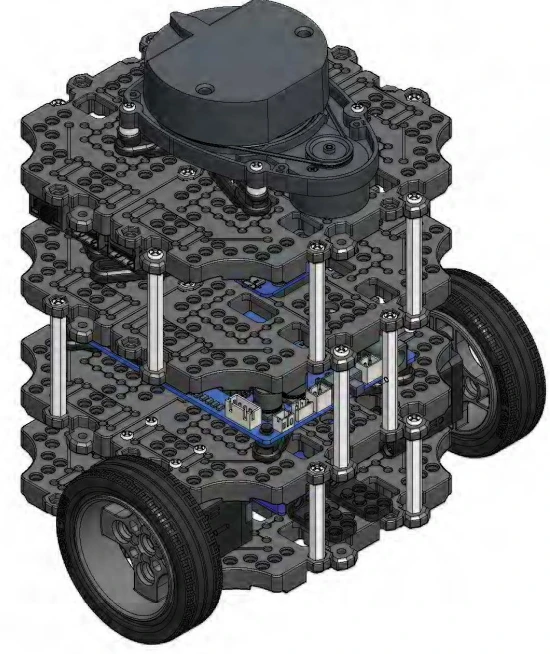
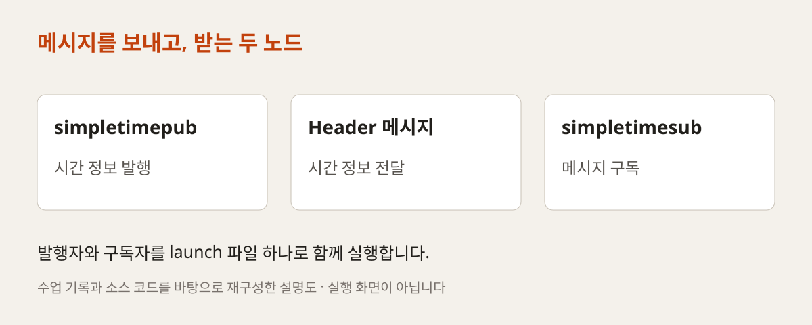
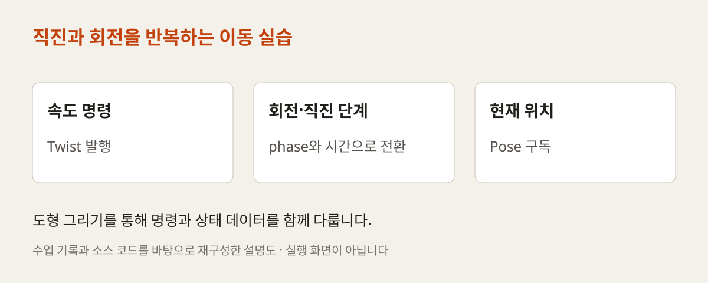
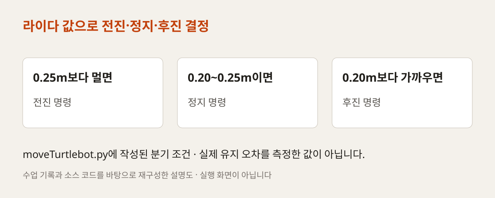
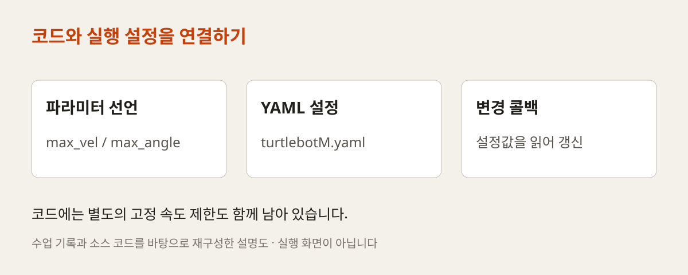
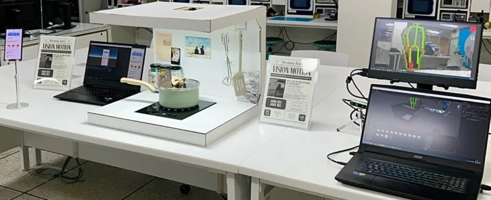

PRE-PROJECT EDUCATION / BUSAN 2024
프로젝트를 시작하는
로봇 프로그래밍의 기초
노드 통신과 turtlesim에서 TurtleBot3 거리 유지, 파라미터 설정까지. 2024년 부산소프트웨어마이스터고 사전직무교육의 ROS2 수업 기록과 예제를 소개합니다.
보내고, 움직이고,
설정을 바꾸어 봅니다
메시지를 주고받는 두 노드에서 출발해 거북이를 움직이고, 센서값에 반응하는 로봇 코드를 작성합니다. 작은 예제를 차례로 연결하며 팀 프로젝트에 필요한 프로그래밍 경험을 쌓는 수업입니다.

크게 보기 ↗수업 저장소의 TurtleBot3 조립 교안 12쪽에 수록된 기체 그림입니다. ROBOTIS TurtleBot3의 구조를 설명하는 교안 자료이며 수업 현장 사진은 아닙니다.
자료 확인 ↗- 확인된 수업 기록
- 4월 16·17·18·23일
README에 기록된 실습 - 핵심 실습
- 노드·launch·turtlesim
기체 제어·파라미터 - 운영 맥락
- 미래내일 일경험 사전직무교육
당시 교육기관 · 바인드소프트
2024 / 04.16–04.17
작은 노드부터 연결하기
프로젝트를 시작하기 전, 로봇 안에서 프로그램들이 어떻게 정보를 주고받는지부터 익혔습니다. 4월 16일에는 ROS2 기본 개념을 살핀 뒤 패키지를 생성하고 simplepub·simplesub 노드를 작성했습니다. 직접 메시지를 보내고 받으며 노드와 토픽의 관계를 확인하는 실습입니다.
이어 시간 정보를 주고받는 simpletimepub·simpletimesub를 작성하고 Header 인터페이스와 QoS를 다뤘습니다. 4월 17일에는 launch 파일로 두 노드를 함께 실행했습니다. 여러 터미널에서 따로 시작하던 프로그램을 하나의 실행 구성으로 묶는 경험입니다.

크게 보기 ↗simpleTime.launch.py에 등록된 두 실행 파일과 날짜별 수업 기록을 바탕으로 그린 설명도입니다.
자료 확인 ↗2024 / 04.17–04.18
화면 속 거북이로 움직임 이해하기
4월 17~18일 기록에는 turtlesim으로 사각형과 별을 그리는 예제와 풀이가 남아 있습니다. 거북이를 움직이는 속도 명령을 보내고, 직진과 회전의 순서를 바꾸어 경로를 만드는 실습입니다. 추상적인 메시지 통신을 눈에 보이는 움직임으로 확인했습니다.
저장소의 moveTurtleSim2.py는 Twist를 발행하고 Pose를 구독합니다. 회전과 전진을 phase로 나누고 일정 시간이 지나면 다음 단계로 전환하도록 작성되어 있습니다. 도형의 이름만 외우기보다 명령·시간·현재 위치가 코드에서 어떻게 연결되는지 살펴보는 데 의미가 있습니다.

크게 보기 ↗이동 코드의 발행·구독과 상태 전환 구조를 재구성했습니다. 실제 주행 궤적을 측정하거나 실행 화면을 재현한 그림은 아닙니다.
자료 확인 ↗2024 / 04.18
센서값으로 기체의 동작 바꾸기
4월 18일에는 TurtleBot3를 설정하고 원격 접속, ROS_DOMAIN_ID, 패키지 설치와 키보드 조작을 다뤘습니다. 화면 속 이동 명령을 실제 기체에 적용하기 위해 통신과 실행 환경을 맞추는 과정입니다.
이후에는 일정 거리를 유지하는 코드를 작성했습니다. moveTurtlebot.py는 라이다의 전방 거리값을 읽고, 0.25m보다 멀면 전진하고 0.20m보다 가까우면 후진하며 그 사이에서는 정지하도록 구성되어 있습니다. 센서값을 조건문으로 처리해 구동 명령으로 바꾸는 예제입니다.

크게 보기 ↗원본 코드의 거리 분기 조건입니다. 20~25cm는 코드가 정지를 선택하는 구간이며, 실제 기체가 보장하는 정밀도나 안전 거리를 뜻하지 않습니다.
자료 확인 ↗이 글에서는 센서 입력과 이동 명령을 연결한 교육 예제로 소개합니다. 장애물 회피 시스템의 완성이나 실제 운용 성능을 검증한 결과로 확대하지 않습니다.
2024 / 04.23
설정을 바꾸며 코드 읽기
4월 23일에는 파라미터를 조회·변경·저장하는 방법을 다루고, simpleParam 노드에서 파라미터를 선언하고 적용했습니다. 이어 moveTurtlebot.py의 속도 관련 설정을 다루며 실행 시 바꿀 수 있는 값과 코드의 관계를 살폈습니다.
실제 코드에는 max_vel과 max_angle 선언, 변경 콜백, YAML 설정이 남아 있습니다. 다만 이동 명령을 제한하는 함수에는 별도의 고정 상수도 사용됩니다. 따라서 모든 주행 동작이 파라미터만으로 완전히 설정되도록 구현됐다고 설명하기보다, 설정값을 선언하고 읽고 갱신하는 학습 과정으로 정리했습니다.

크게 보기 ↗turtlebotM.yaml과 moveTurtlebot.py의 관계를 설명한 도해입니다. 파라미터 적용 코드와 고정 제한값이 함께 있다는 점도 구분했습니다.
자료 확인 ↗2024 / RELATED PROJECTS
팀의 아이디어로 이어지는 기초
사전직무교육은 이후 로봇 분야 일경험 프로젝트를 수행하기 위한 기초 소양을 준비하는 과정으로 계획되었습니다. 노드 통신과 실행 구성, 센서 제어 경험은 각 팀이 자신의 주제를 구현할 때 활용할 수 있는 기반입니다.
별도 프로젝트 기록에는 모션 제어 주방, 교내 배달 로봇, 로봇 보드게임 등 여섯 팀의 개발 과정이 남아 있습니다. 교육 내용과 교육생이 기획·구현한 결과물은 구분해 소개합니다.

크게 보기 ↗후속 VIMO 팀 결과보고서의 모형 주방과 화면입니다. 사전직무교육 현장 사진이 아니라 교육생 프로젝트 결과 이미지입니다.
자료 확인 ↗수업 기록과 운영계획을 구분해 읽기
운영계획서에는 기간과 시수가 다른 안이 남아 있습니다. 이 글은 4월 16~23일 저장소에 기록된 네 차례 수업 내용을 중심으로 정리했으며, 이를 전체 사전직무교육 기간이나 총 교육시간으로 제시하지 않습니다. 운영계획의 교육기관은 바인드소프트, 담당자는 최수길로 기재되어 있습니다.
본문의 도해는 실제 소스 코드를 설명하기 위해 재구성했습니다. 교안의 기체 그림과 후속 프로젝트 사진은 각각의 출처와 용도를 표시했습니다. 예제 링크는 확인 당시 커밋으로 고정했습니다.